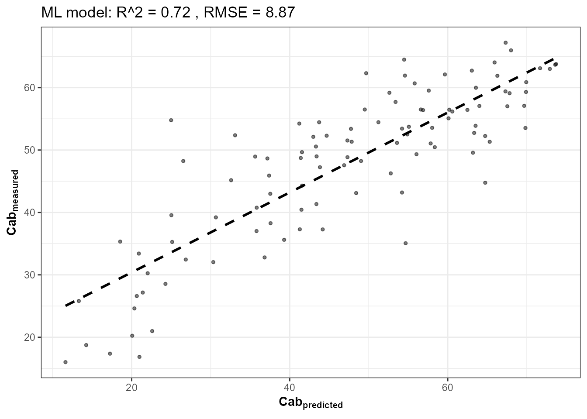
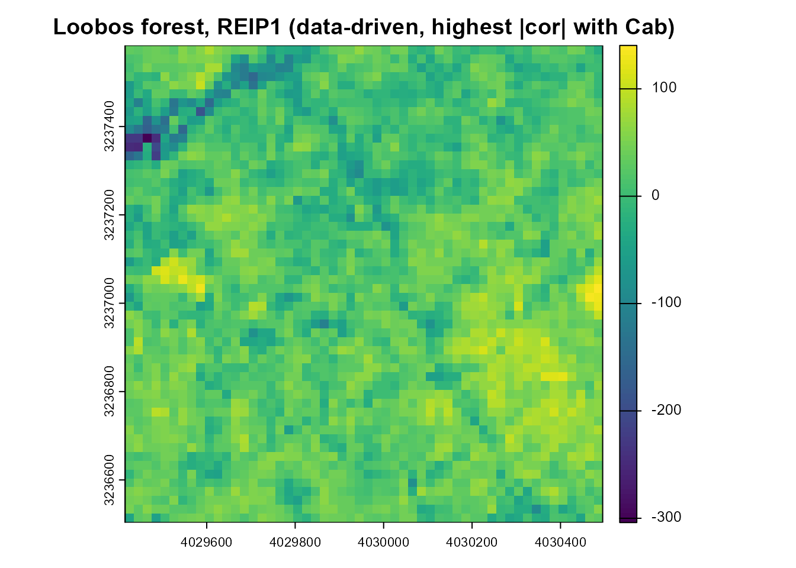
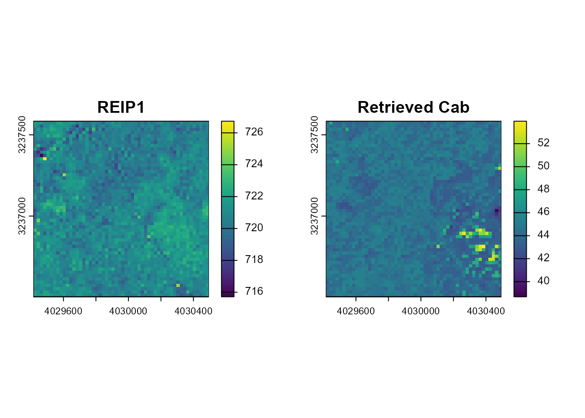

18. Data-Driven Spatial Index Mapping with getSpatial_index()
t18-spatial-index-mapping.Rmd
library(ToolsRTM)Tutorial 09 introduced getSpatial_index() as the spatial
(raster-in, raster-out) counterpart to the tabular index functions – one
real GeoTIFF in, one index map out. This closing tutorial uses it for
real, but doesn’t guess which index to map: it simulates a LUT, inverts
Cab from it (Tutorial 12’s own rigor), finds which spectral
index actually correlates best with the retrieved trait, and
only then maps that winning index – and Cab itself –
spatially, over a real Sentinel-2 image.
Simulated LUT (500 rows)
|
v
Hybrid-invert Cab (RF, Tutorial 12)
|
v
Rank every spectral index by correlation with Cab
|
v
Winning index (data-driven, not assumed)
| Real Sentinel-2 image (STAC,
| NL-Loo/Loobos forest, NL)
| |
v v
+------------------ getSpatial_index() ----+
|
v
Winning index map + Cab trait map1. Simulate a 500-row LUT and invert Cab
Same rigor as Tutorial 12 – 500 simulations, Sentinel-2A convolution,
Random Forest, held-out test set. Three settings are chosen to cover the
real scene this LUT will later be applied to (Section 3): LAI
down to 0.3 (inputsPROSAIL’s own default lower
bound of 2 assumes a canopy always dense enough to be optically closed –
too narrow for a real forest, which includes gaps, edges and understory
in the same 500m-radius footprint), a realistic non-zero sun
zenith (25-45°, matching a July midday acquisition at 52°N,
rather than the package default tts = 0, i.e. sun directly
overhead), and variable soil brightness (0.05-0.30,
Tutorial 03’s BSM range, rather than one flat
rsoil = 0.15). Together these widen the simulated
reflectance envelope enough to actually contain the real Sentinel-2
pixel values retrieved in Section 3 – a hybrid-inversion model can only
be trusted on inputs that fall inside the range it was trained on:
n_samples <- 500
LUT <- as.data.frame(getLUT(inputs = ToolsRTM::inputsPROSAIL, nLUT = n_samples, setseed = 1))
wl <- 400:2500
set.seed(3)
LUT$LAI <- runif(n_samples, 0.3, 5)
LUT$tts <- runif(n_samples, 25, 45)
soil_brightness <- runif(n_samples, 0.05, 0.30)
refl <- t(sapply(seq_len(n_samples), function(i) {
rsoil_i <- rep(soil_brightness[i], length(wl))
foursail(inputLUT = LUT[i, ], rsoil = rsoil_i, LeafModel = "PROSPECT-PRO")$rsot
}))
refl_X <- as.data.frame(refl); colnames(refl_X) <- paste0("X", wl); refl_X <- cbind(id = seq_len(n_samples), refl_X)
se2a_full <- suppressMessages(get.spectra.convolved(rfl = refl_X, sensor = "Sentinel2a", plot.spectra = FALSE))
names(se2a_full) <- c("id","B1","B2","B3","B4","B5","B6","B7","B8","B8A","B9","B10","B11","B12")
keep <- c("B2","B3","B4","B5","B6","B7","B8","B8A","B11","B12")
real_names <- c("B02","B03","B04","B05","B06","B07","B08","B8A","B11","B12")
se2a <- se2a_full[, keep]; names(se2a) <- real_names
set.seed(1)
train_idx <- sample(seq_len(n_samples), size = round(0.7 * n_samples))
train_df <- cbind(LUT[train_idx, ], se2a[train_idx, ])
fit_cab <- get.inversion(data = train_df, depVar = "Cab", inputs = real_names,
algorithm = "RF", n.samples = nrow(train_df), seed = 42)
2. Which index correlates best with Cab? Computed, not assumed
se2a_indexed <- se2a
names(se2a_indexed) <- c("B2","B3","B4","B5","B6","B7","B8","B8A","B11","B12") # getIndicesSE2's own naming
indices_full <- suppressMessages(getIndicesSE2(df = se2a_indexed, sensor = "Sentinel-2a",
df.data = NULL, fast.process = TRUE))
#> | | | 0% | | | 1% | |= | 1% | |= | 2% | |== | 2% | |== | 3% | |=== | 4% | |=== | 5% | |==== | 5% | |==== | 6% | |===== | 7% | |===== | 8% | |====== | 8% | |====== | 9% | |======= | 9% | |======= | 10% | |======= | 11% | |======== | 11% | |======== | 12% | |========= | 12% | |========= | 13% | |========== | 14% | |========== | 15% | |=========== | 15% | |=========== | 16% | |============ | 16% | |============ | 17% | |============ | 18% | |============= | 18% | |============= | 19% | |============== | 19% | |============== | 20% | |============== | 21% | |=============== | 21% | |=============== | 22% | |================ | 22% | |================ | 23% | |================= | 24% | |================= | 25% | |================== | 25% | |================== | 26% | |=================== | 26% | |=================== | 27% | |=================== | 28% | |==================== | 28% | |==================== | 29% | |===================== | 29% | |===================== | 30% | |===================== | 31% | |====================== | 31% | |====================== | 32% | |======================= | 32% | |======================= | 33% | |======================== | 34% | |======================== | 35% | |========================= | 35% | |========================= | 36% | |========================== | 36% | |========================== | 37% | |========================== | 38% | |=========================== | 38% | |=========================== | 39% | |============================ | 39% | |============================ | 40% | |============================ | 41% | |============================= | 41% | |============================= | 42% | |============================== | 42% | |============================== | 43% | |=============================== | 44% | |=============================== | 45% | |================================ | 45% | |================================ | 46% | |================================= | 46% | |================================= | 47% | |================================= | 48% | |================================== | 48% | |================================== | 49% | |=================================== | 49% | |=================================== | 50% | |=================================== | 51% | |==================================== | 51% | |==================================== | 52% | |===================================== | 52% | |===================================== | 53% | |===================================== | 54% | |====================================== | 54% | |====================================== | 55% | |======================================= | 55% | |======================================= | 56% | |======================================== | 57% | |======================================== | 58% | |========================================= | 58% | |========================================= | 59% | |========================================== | 59% | |========================================== | 60% | |========================================== | 61% | |=========================================== | 61% | |=========================================== | 62% | |============================================ | 62% | |============================================ | 63% | |============================================ | 64% | |============================================= | 64% | |============================================= | 65% | |============================================== | 65% | |============================================== | 66% | |=============================================== | 67% | |=============================================== | 68% | |================================================ | 68% | |================================================ | 69% | |================================================= | 69% | |================================================= | 70% | |================================================= | 71% | |================================================== | 71% | |================================================== | 72% | |=================================================== | 72% | |=================================================== | 73% | |=================================================== | 74% | |==================================================== | 74% | |==================================================== | 75% | |===================================================== | 75% | |===================================================== | 76% | |====================================================== | 77% | |====================================================== | 78% | |======================================================= | 78% | |======================================================= | 79% | |======================================================== | 79% | |======================================================== | 80% | |======================================================== | 81% | |========================================================= | 81% | |========================================================= | 82% | |========================================================== | 82% | |========================================================== | 83% | |========================================================== | 84% | |=========================================================== | 84% | |=========================================================== | 85% | |============================================================ | 85% | |============================================================ | 86% | |============================================================= | 87% | |============================================================= | 88% | |============================================================== | 88% | |============================================================== | 89% | |=============================================================== | 89% | |=============================================================== | 90% | |=============================================================== | 91% | |================================================================ | 91% | |================================================================ | 92% | |================================================================= | 92% | |================================================================= | 93% | |================================================================== | 94% | |================================================================== | 95% | |=================================================================== | 95% | |=================================================================== | 96% | |==================================================================== | 97% | |==================================================================== | 98% | |===================================================================== | 98% | |===================================================================== | 99% | |======================================================================| 99% | |======================================================================| 100%
# getSpatial_index() only implements a subset of index names -- only rank
# among indices that can actually be mapped spatially in Section 4 below,
# not the full 70-index tabular set Tutorial 09 covers.
spatial_index_names <- c("ARI","ARV2","ARVI","AVI","BAI","BAIS2","CIg","CIgreen","CIre","CR_SWIR",
"EVI","GM1","GM2","GNDVI","Greeness","IRECI","MCARI","MCARI1","MCARI2",
"MNDVI","MSAVI","MSR","MTVI1","MTVI2","NBR","NDRE","NDVI","NDWI","NDWI2",
"OSAVI","PSSRa","PVI","RDVI","REIP1","REIP2","RVI","RedEg1","RedEg2",
"Redness","S2REP","SIPI","SR","TCARI","TCARI_OSAVI","TVI","WDRVI")
candidate_names <- intersect(names(indices_full), spatial_index_names)
cor_table <- data.frame(
index = candidate_names,
abs_cor_with_Cab = sapply(candidate_names, function(nm) abs(cor(indices_full[[nm]], LUT$Cab[seq_len(n_samples)], use = "complete.obs")))
)
cor_table <- cor_table[order(-cor_table$abs_cor_with_Cab), ]
knitr::kable(head(cor_table, 10), row.names = FALSE, digits = 3)| index | abs_cor_with_Cab |
|---|---|
| REIP1 | 0.787 |
| REIP2 | 0.787 |
| TCARI | 0.655 |
| TCARI_OSAVI | 0.583 |
| GM2 | 0.582 |
| CIre | 0.574 |
| NDRE | 0.529 |
| MCARI | 0.512 |
| CIg | 0.386 |
| CIgreen | 0.386 |
winning_index <- cor_table$index[1]
cat("Winning index (highest |correlation| with Cab, among those getSpatial_index() supports):", winning_index, "\n")
#> Winning index (highest |correlation| with Cab, among those getSpatial_index() supports): REIP13. Retrieve a real Sentinel-2 image: NL-Loo (Loobos), Netherlands
A real ICOS station: Loobos (NL-Loo), an evergreen needleleaf forest (Scots pine, Pinus sylvestris) near Kootwijk on the Veluwe, Gelderland – not to be confused with Speulderbos (Tutorials 15/17, a different site a few km away). Planted around 1909 on sand dunes to fight erosion and left largely unmanaged since, it’s one of the world’s longest continuously running eddy-covariance flux-tower records (ICOS station class 2, PI Michiel van der Molen). Official station coordinates, from the ICOS Carbon Portal station page: 52.166447°N, 5.74355°E, 33 m elevation. Same STAC retrieval code already verified in Tutorials 15/17, a different real site:
library(sf); library(terra)
pt <- st_point(c(5.7436, 52.1666)) |> st_sfc(crs = 4326)
scenario <- st_as_sf(data.frame(id = 1), geometry = st_sfc(pt[[1]], crs = 4326))
bbox <- get_bounding_box(scenario, 500)
shape <- st_as_sf(data.frame(id = 1), geometry = st_sfc(st_polygon(list(rbind(
c(bbox["xmin"], bbox["ymin"]), c(bbox["xmin"], bbox["ymax"]),
c(bbox["xmax"], bbox["ymax"]), c(bbox["xmax"], bbox["ymin"]),
c(bbox["xmin"], bbox["ymin"])))), crs = 4326))
sc <- get.satellite_collection(scenario = scenario, collection = "sentinel-2-l2a",
cloud_server = "microsoft", n.limit = 20,
date_range = c("2024-07-01", "2024-07-31"),
cloud_threshold = 40, buffer_size = 500)
cube <- get.sentinel2_cube(sc[[1]], shape = shape, date_range = c("2024-07-01", "2024-07-31"),
aggregation_method = "mean", get.dataset = FALSE)
cat("Real cube retrieved:", paste(dim(cube), collapse = " x "), "(rows x cols x bands), bands:",
paste(names(cube), collapse = ", "), "\n")4. getSpatial_index() needs a file on disk, and all 12
nominal bands
getSpatial_index() reads a GeoTIFF path (not an
in-memory object) and assumes the full nominal 12-band SMAC order
(B01…B12). get.sentinel2_cube()
deliberately excludes the two 60m-only bands (B01,
B09) that don’t carry vegetation signal at this resolution
(same convention as Tutorials 15/17) – filled here with their nearest
real spectral neighbor as a placeholder so the function can run on
genuinely real reflectance rather than needing bands this pipeline never
collects. Neither B01 nor B09 enters the
winning index formula for any of Section 2’s top candidates, so this
placeholder doesn’t affect the result below:
refl <- cube[[real_names]] / 10000
full12 <- c(refl[["B02"]], refl[["B02"]], refl[["B03"]], refl[["B04"]], refl[["B05"]], refl[["B06"]],
refl[["B07"]], refl[["B08"]], refl[["B8A"]], refl[["B8A"]], refl[["B11"]], refl[["B12"]])
names(full12) <- c("B01","B02","B03","B04","B05","B06","B07","B08","B8A","B09","B11","B12")
tmp_tif <- tempfile(fileext = ".tif")
terra::writeRaster(full12, tmp_tif, overwrite = TRUE)5. The winning index, mapped over a real image
idx_map <- getSpatial_index(rasterFiles = tmp_tif, Sensor = "Sentinel2a",
SpectraltoCompute = winning_index, factorR = 1)
plot(idx_map[[1]], main = paste0("Loobos forest, ", winning_index, " (data-driven, highest |cor| with Cab)"))
6. Cab itself, mapped – the same per-pixel pattern as Tutorials 15/17
pix_df <- as.data.frame(refl, xy = TRUE, na.rm = FALSE)
ok_rows <- stats::complete.cases(pix_df[, real_names])
Cab_pixels <- rep(NA_real_, nrow(pix_df))
Cab_pixels[ok_rows] <- as.numeric(predict(fit_cab$model, pix_df[ok_rows, real_names]))
cab_map <- refl[["B04"]]
terra::values(cab_map) <- Cab_pixels
names(cab_map) <- "Cab_pred"
op <- par(mfrow = c(1, 2))
plot(idx_map[[1]], main = winning_index)
plot(cab_map, main = "Retrieved Cab")
par(op)
cat("Correlation between the mapped", winning_index, "and mapped Cab, pixel-by-pixel:",
round(cor(as.numeric(terra::values(idx_map[[1]])), Cab_pixels, use = "complete.obs"), 2), "\n")
#> Correlation between the mapped REIP1 and mapped Cab, pixel-by-pixel: -0.01Two independent pixel-by-pixel outputs over the same real scene – one a plain spectral index, the other a full hybrid-inversion trait retrieval – their spatial agreement (or disagreement) is itself informative, not assumed: a strong correlation here means the simple index is largely capturing the same signal the more expensive ML model is; a weak one means the ML model is picking up something the index alone misses.
Series complete
01 Getting Started -> ... -> 17 Forest Time Series -> 18 Spatial Index Mapping (this page)Two real forest sites now mapped across this series – Speulderbos (Tutorials 15, 17) and Loobos (this page) – both real ICOS/flux-tower locations in the Netherlands, both retrieved live via STAC, both fed through this package’s own hybrid-inversion machinery end to end.